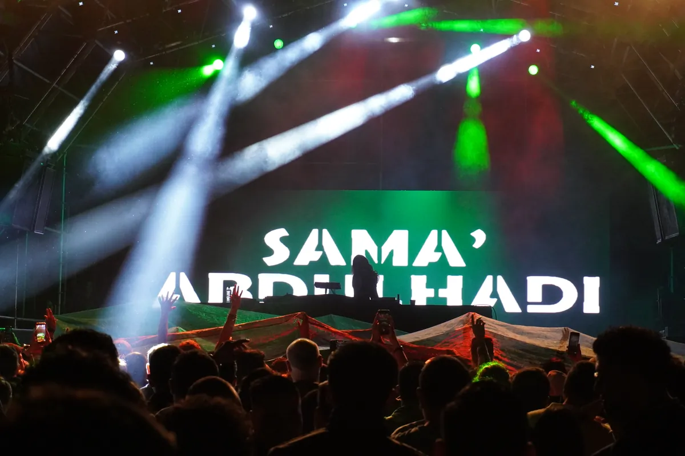
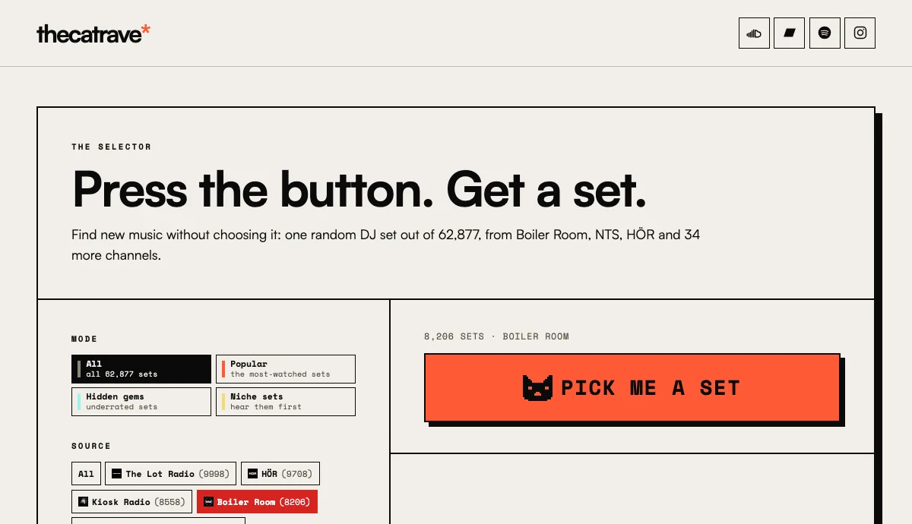
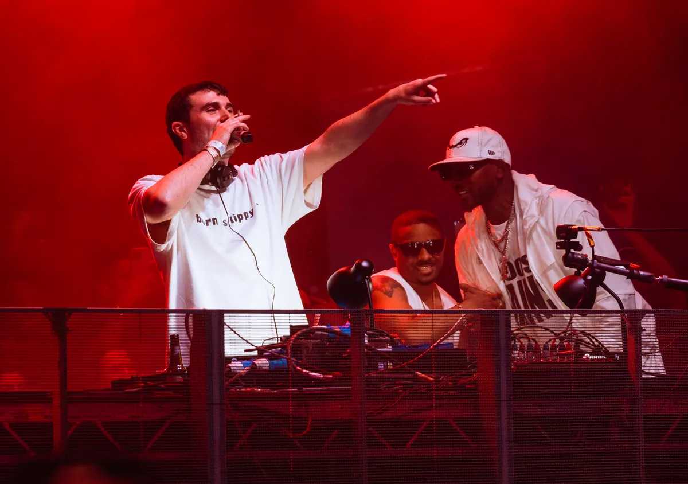
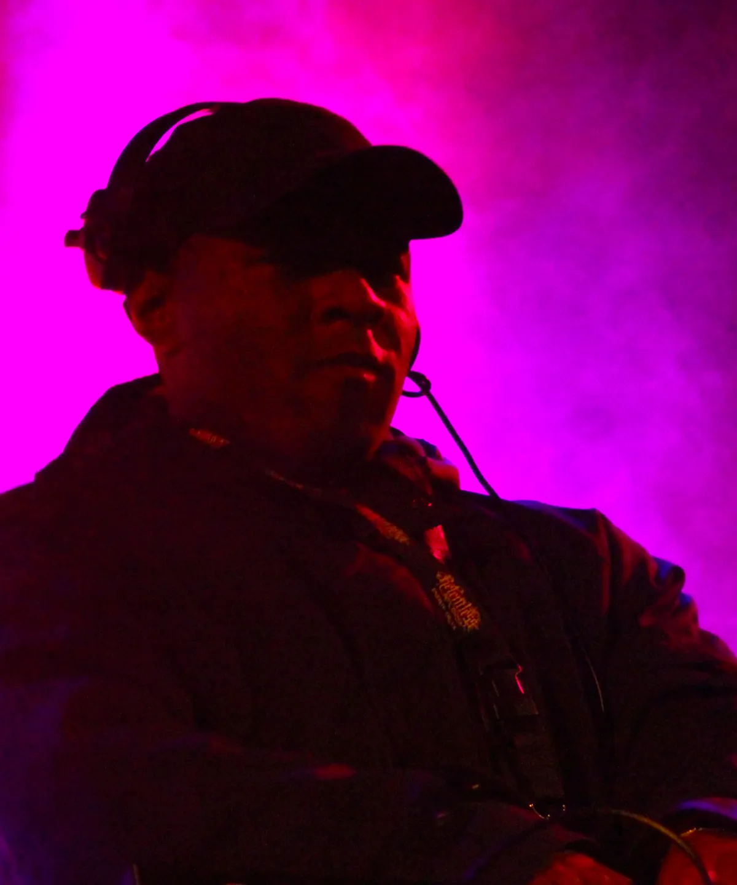

Boiler Room
Best Boiler Room Sets of All Time
Two lists, kept apart: the ten most-watched Boiler Room sets as measured across 8,206 recordings, and eighteen picked for what actually happens in them.
Two lists, kept apart.
Boiler Room has filmed more than 8,000 performances since 2010. This site's catalogue holds 8,206 of them, with 1.77 billion YouTube views between them. Most lists of the best Boiler Room sets are one person's memory with embeds attached, so this page keeps two lists apart.
The first is measured: the most-watched Boiler Room sets, counted from those view figures. The second is a judgement: eighteen sets picked for what happens in them, each with the reason it is here and the set itself to play.
What makes a Boiler Room set great.
Boiler Room began in London in March 2010, when Blaise Bellville asked Thristian Richards to livestream a mix for a magazine. It became a weekly show streamed on Ustream and reached Berlin, Los Angeles and São Paulo within a year. The format has barely changed. The DJ plays in the middle of the room rather than above it, the people dancing behind the decks are in every shot, and there is no stage. A Boiler Room DJ set is filmed from about where a friend of the DJ would stand.

Inside that format, a set is great in four ways, and every set in the ranking below earns its place on at least one of them. Something happens that you can only see: Fred again.. switching from the decks to an MPC, DJ Ramon Sucesso's hands on the mixer. The room becomes part of the set, as a hotel suite did for Skream and Disclosure. The set changed the career of the person playing it, which is the story of Sama' Abdulhadi, Uncle Waffles and ¥ØU$UK€ ¥UK1MAT$U.
The fourth test is the opposite of the first: the set still works with the screen off. Len Faki's ninety-three minutes in Berlin have no guest, no MC and no famous clip, and they have nine million views anyway. Boiler Room's own audio upload of it is below, which is the fairest way to judge a set on this count.
Views measure reach. For affection we use likes per thousand views, and it needs one warning. Across the 7,414 sets in the catalogue that carry a like count, the median rate rises from about 9 for sets uploaded in 2012 and 2013 to about 20 for every year since 2019, because older videos collected most of their views before liking one was a habit. So a rate only means something against sets of the same age.
Measured
The most-watched Boiler Room sets.
These are the top Boiler Room sets by views, counted from the YouTube figures in this site's catalogue in September 2026. Boiler Room publishes its own all-time chart of the same thing, and it matches ours set for set with one exception: it leaves out Richie Hawtin's 2012 set in Amsterdam, which is seventh here with 15.58 million views on Boiler Room's own channel.
| # | Set | Filmed in | Year | Views | Likes | Likes per 1,000 views |
|---|---|---|---|---|---|---|
| 1 | Solomun | Tulum | 2015 | 76.19M | 452,859 | 5.9 |
| 2 | Carl Cox | Ibiza | 2013 | 74.26M | 424,683 | 5.7 |
| 3 | Fred again.. | London | 2022 | 55.25M | 766,903 | 13.9 |
| 4 | Kaytranada | Montréal | 2013 | 25.12M | 359,823 | 14.3 |
| 5 | ¥ØU$UK€ ¥UK1MAT$U | Tokyo | 2025 | 20.39M | 532,202 | 26.1 |
| 6 | Maceo Plex | Berlin | 2014 | 16.83M | 113,408 | 6.7 |
| 7 | Richie Hawtin | Amsterdam | 2012 | 15.58M | 91,350 | 5.9 |
| 8 | Sama' Abdulhadi | Ramallah | 2018 | 15.24M | 297,397 | 19.5 |
| 9 | David August | Berlin | 2014 | 14.80M | 129,168 | 8.7 |
| 10 | Chase & Status | London | 2023 | 14.68M | 219,003 | 14.9 |
Half of the ten were filmed between 2012 and 2014, and three of them were recorded on a beach in Tulum or in a villa on Ibiza rather than in a club.
The second pattern is in the likes. The biggest sets by views are rarely the most loved by the people watching them. Solomun's Tulum set has 5.9 likes per thousand views, less than half the median of 12.0 for sets uploaded in 2015. Our reading, and it is only a reading, is that a set with 76 million views reached most of them through recommendations, from people who were not Boiler Room viewers to begin with. The most-liked set in the catalogue is Fred again..'s, with 766,903 likes on 21 million fewer views.
Every number on this page comes from the catalogue behind the Selector, the tool on this site that plays one full DJ set at random. It holds 62,877 sets from 37 channels, 8,206 of them Boiler Room's, each with its views, likes and length, which is how a like rate can be worked out for every one of them. It is also the quickest way to hear what these lists leave out: narrow it to Boiler Room and it hands you a set you did not choose.

Solomun played Tulum on 14 January 2015, at Papaya Playa Project. The set runs just over two hours, which is part of why the view count is so large: it is the kind of video that stays on in the background.
Ranked
The best Boiler Room sets.
Eighteen sets, ranked. The order is ours, and the numbers beside each one are measured.
#1 Fred again.., London 2022
The most-watched Boiler Room set of the 2020s, at 55.25 million views. Fred again.. did not only DJ. He moved between the decks and an MPC, replaying parts of his own records live, which Sonicstate described at the time as a hybrid set. His records were built from voice notes and recordings of friends, and here he was taking them apart in front of the people singing them back.

It also has the best numbers in the catalogue that are not raw reach. Its 766,903 likes are the most of any Boiler Room set we hold, and at 13.9 likes per thousand views it runs well ahead of the only two sets with more views, Solomun at 5.9 and Carl Cox at 5.7. Among the records is a bootleg putting Lil Baby over Overmono's "Bby", and a new Four Tet track.
#2 Sama' Abdulhadi, Palestine 2018
On 22 June 2018 Boiler Room filmed its first event in Ramallah, and Sama' Abdulhadi played 58 minutes of techno. She was one of the first DJs to bring techno to Palestine at all, and the scene around her is the subject of Boiler Room's short film Palestine Underground.
After those 58 minutes she was no longer a local name. The set passed ten million views and now stands at 15.24 million, eighth on the all-time list, with 19.5 likes per thousand views, a higher rate than any other set in the top ten except the Tokyo one from 2025. It is the clearest case in the archive of a Boiler Room set making a career rather than recording one.
#3 Carl Cox, Ibiza 2013
Carl Cox & Friends was one of Boiler Room's Ibiza Villa Takeovers, filmed on 15 August 2013. One of the biggest names in dance music plays three quarters of an hour of house and tech house in a private villa, not a club.
That is the format at its purest, and 74.26 million views makes it the second most-watched Boiler Room set, 1.9 million behind Solomun. The difference between the two is what you are watching. Solomun's video is a place. Cox's is a man enjoying himself at close range, which is what the camera was put there to catch.
#4 Kaytranada, Montréal 2013
Boiler Room's second night in Montreal, on 27 September 2013, had an all-local bill: High Klassified, Tommy Kruise, Shash'U, Kenlo Craqnuques and Kaytranada. His set is built largely from his own edits and remixes, his version of Robert Glasper's "Move Love" and his remix of Flume's "Holdin On" among them. House, hip-hop and R&B, played by someone who had made most of the versions himself.
It has 25.12 million views, fourth on the all-time list. For a set from 2013 its 14.3 likes per thousand views is also unusually high, well above the median of 9.0 for that year.
#5 ¥ØU$UK€ ¥UK1MAT$U, Tokyo 2025
Yousuke Yukimatsu was working in construction when he was diagnosed with a malignant brain tumour in 2016. He left the job, went through treatment and two surgeries, and turned to DJing entirely. His Tokyo set, filmed in early 2025, passed twelve million views within half a year.
It now has 20.39 million, fifth on the all-time list, not first as some round-ups say. What the view count hides is the like count: 532,202, second only to Fred again.. across every Boiler Room set in the catalogue, and at 26.1 per thousand views the highest rate of any set in the top ten.
#6 DJ EZ, London 2014
On 4 February 2014 DJ EZ played Boiler Room London for more than three hours. He started on digital, moved to vinyl and then to CDs, with MC Majestic on the mic for half an hour, and ran through bassline, UK garage and 2-step: Wookie, DJ Zinc, Zed Bias, Sticky, Scott Garcia.

It is less a set than a history of the music told on the decks, which is why it sits beside our UK garage guide. At 205 minutes it is the longest set on this list by a distance, with 2.9 million views. It is the best answer we know to anyone who asks what garage sounds like mixed rather than listed.
#7 Skream b2b Disclosure, London 2012
In November 2012 Boiler Room and W Hotels held a party called Do Not Disturb at the W Hotel in London. The last set of the night was Skream, from dubstep's first generation, back to back with Disclosure, the garage upstarts in Vice's phrase, and Vice's report has the room beating each other with hotel pillows by the end.
It is the best example of the room becoming part of the set. A dubstep producer and a garage duo meet on house for seventy minutes, and the video has 3.53 million views. Where Skream came from is in our dubstep guide.
#8 Charli xcx, Brooklyn 2024
PARTYGIRL, Charli xcx's first Boiler Room, was held in a warehouse at 99 Scott Avenue in Brooklyn on 22 February 2024. It drew more than 25,000 RSVPs, the most in Boiler Room's history.
This is the Charli XCX Boiler Room set most people mean, though there were two: PARTYGIRL Ibiza followed at Amnesia in July. The Brooklyn video has 8.96 million views and 23.9 likes per thousand, second only to the Tokyo set among Boiler Room sets past eight million. It is here because it is the clearest case of a pop star using the format to DJ rather than to perform, and because of that RSVP count.
#9 Chase & Status, London 2023
Filmed at Boiler Room's London By Night at the Colour Factory on 16 September 2023, and published in October. Saul Milton is on the decks with the MCs Takura and Flowdan, through their own "Delete", "No Problem" and "Selecta", records by Rusko and Dimension, and a VIP of "Baddadan".
It is the only drum and bass set among the ten most-watched, at 14.68 million views and 219,003 likes. Where the music came from is in our drum and bass guide.
#10 Laurent Garnier, Dekmantel 2013
Dekmantel held its first festival in Amsterdam in August 2013, and Boiler Room filmed the first day. Laurent Garnier played 55 minutes of techno and house on 23 August.
It has 6.59 million views, and whynow ranked it third of all time. We have it lower only because the sets above it did something the format had not seen before. This one is the festival Boiler Room done straight: a veteran, a big crowd and fifty-five minutes, with nothing added.
#11 Len Faki, Berlin 2014
Filmed in Berlin on 7 May 2014, ninety-three minutes of solo techno.
It has 9.05 million views, and it is this list's case for the set that works with the screen off. Nothing in it needs to be seen, and that is exactly why it holds up as a listen years later.
#12 Nicolas Jaar, New York 2013
Jaar played in April 2013 at a takeover by his label Clown & Sunset with Red Bull Music Academy. Forty-six minutes, tagged downtempo and experimental in the catalogue, and the slowest set on this list.
It has 9.09 million views, a lot for music this far from a peak-time club. It is here as proof that the format does not need a drop.
#13 PinkPantheress, London 2022
IFFY FM brought PinkPantheress and friends to Boiler Room on 7 December 2022, with Saunders, Jjess and Tommy Gold on the bill, and GoldLink and FLO joining for the final hour. The records ran through garage, bassline and grime.
Its 3.51 million views are modest for this list, but 30.9 likes per thousand is not: only five Boiler Room sets past a million views have a higher rate. It is also the set here closest to the revival our UK garage guide measures.
#14 DJ Ramon Sucesso, Barcelona 2024
Ramon Alves da Silva was born in 2002 in Belford Roxo, Rio de Janeiro, and became known for filmed bedroom sessions his followers called Sexta dos Crias. The way he works a mixer went viral, and it got him a Boiler Room slot at Primavera Sound in Barcelona, recorded on 30 May 2024.
This is the set to watch rather than hear. It has 1.31 million views and 65,308 likes, a rate of 49.9 per thousand, the highest of any Boiler Room set past a million views in our catalogue. On the count of something you can only see, nothing else here comes close.
#15 Uncle Waffles, Johannesburg 2022
Uncle Waffles went viral in October 2021 with a video of her dancing to Young Stunna's "Adiwele" during a set at Zone 6 in Soweto. Four months later she played Boiler Room x Ballantine's True Music Studios in Johannesburg, on a bill curated by DBN Gogo with Que DJ, Boohle and Young Stunna.
It is amapiano, filmed at home, a month before her debut single "Tanzania" came out, and it has 2.09 million views. Of the career-making sets on this list, it is the one that caught the career at its very start.
#16 Underworld, London 2025
Underworld made their Boiler Room debut on 2 August 2025 at Burgess Park in London, with an 80-minute live set that included "Dark & Long", "Two Months Off", "Cowgirl" and "Born Slippy (Nuxx)".
It is here for the like count. 122,084 likes on 4.34 million views is 28.1 per thousand, the thirteenth highest rate of any Boiler Room set past a million views, and the only one in that group by a band whose best-known record came out in the 1990s.
#17 Folamour, FLY Open Air 2019
Filmed at FLY Open Air in Edinburgh in 2019, an hour of disco, funk and house at a festival.
It has 7.81 million views, which makes it the most-watched set Boiler Room uploaded in 2019, a year in which the catalogue holds 996 of them. whynow's list has it too.
#18 Mall Grab, Melbourne 2022
Mall Grab played Boiler Room Melbourne in late 2022: ninety minutes of house, techno and rave, his own records alongside tracks by KETTAMA, Clouds and Effy. Gray Area covered it as a homecoming.
It has 2.45 million views. It closes the list because it is the most ordinary set here in the best sense: a DJ playing a long, loud set of his own records and his friends' in front of a home crowd.
Where to go from here.
Every set on this page is also in the Selector, along with the other 8,188 Boiler Room sets in the catalogue, one at random per press. If you would rather choose than be chosen for, how to find new music covers the slower routes.
Boiler Room sets FAQ.
What is the most popular Boiler Room set ever?
By likes, Fred again..'s set in London in 2022, with 766,903, more than any other Boiler Room set in our catalogue of 8,206. By views it is Solomun's in Tulum in 2015, with 76.19 million. The two disagree because the most-watched sets pick up many viewers who do not usually like videos, which is how Fred again.. leads on likes with 21 million fewer views.
What is the most viewed Boiler Room set?
Solomun's set in Tulum, Mexico, recorded on 14 January 2015, with 76.19 million views on YouTube as of September 2026. Carl Cox's Ibiza villa set from 2013 is second at 74.26 million, and Fred again.. in London is third at 55.25 million. The Tokyo set by ¥ØU$UK€ ¥UK1MAT$U is sometimes called the most-watched. It is fifth, with 20.39 million.
Where did Charli XCX do her Boiler Room set?
In a warehouse in Bushwick, Brooklyn, New York, on 22 February 2024, at an event called PARTYGIRL. It drew more than 25,000 RSVPs, the most in Boiler Room's history. She played a second Charli XCX Boiler Room set, PARTYGIRL Ibiza, at Amnesia in July 2024. The Brooklyn video has 8.96 million views and the Ibiza one 8.67 million.
What is the best Boiler Room set ever?
Our pick is Fred again.. in London in 2022, for a combination no other set has: something happening on camera that a recording of the mix would lose, the highest like count in the archive, and a crowd that is part of the performance. Boiler Room's own all-time chart ranks by views, which puts Solomun first.
What are some of the best Boiler Room sets to study to?
Long sets with a steady mood and few vocal moments. Len Faki in Berlin, ninety-three minutes of techno, Nicolas Jaar in New York, forty-six minutes of downtempo, Laurent Garnier at Dekmantel, and DJ EZ's three-hour garage set in London all hold up with the video closed. The sets built around a moment, such as Fred again..'s or Charli XCX's, are better watched.
Sources.
- Boiler Room: Top 10 All Time
- Wikipedia: Boiler Room (music broadcaster)
- Wikipedia: Yousuke Yukimatsu
- Vice: Boiler Room, Disclosure b2b Skream
- Fact: DJ EZ to play three hour set on Boiler Room
- setlist.fm: Charli xcx at 99 Scott Ave, Brooklyn, 22 February 2024
- setlist.fm: Underworld at Burgess Park, 2 August 2025
- Sonicstate: Fred again.. hybrid set for Boiler Room
- whynow: We rank the 10 best Boiler Room sets of all time
- View counts, like counts, set lengths and like rates are measured from this site's own catalogue of 62,877 recorded DJ sets, 8,206 of them Boiler Room's, as of September 2026.
Continue reading
Read next.
 A07Guide / UK garage / ~16 min
A07Guide / UK garage / ~16 minWhat Is UK Garage? The Sound, 2-Step, Speed Garage and Bassline
London played an American record too fast until the beat broke. The branches it split into, and the numbers behind its revival.
Read article → A05Guide / Dubstep / ~15 min
A05Guide / Dubstep / ~15 minWhat Is Dubstep? Origins, Sound and the Genre Split
From south London record shops and 200-capacity basements to a genre that split into two sounds sharing one name.
Read article → A08Guide / Drum and bass / ~13 min
A08Guide / Drum and bass / ~13 minWhat Is Drum and Bass? History, Sound and Subgenres
The genre jungle became after the mid-1990s split: 174 BPM, chopped breaks and sub-bass, from Metalheadz to a global festival circuit.
Read article → A01Guide / Breakbeat / ~23 min
A01Guide / Breakbeat / ~23 minBreakbeat Music: History, Sound and Evolution
From funk breaks and pirate radio to cracked VSTs and modern bass hybrids.
Read article →